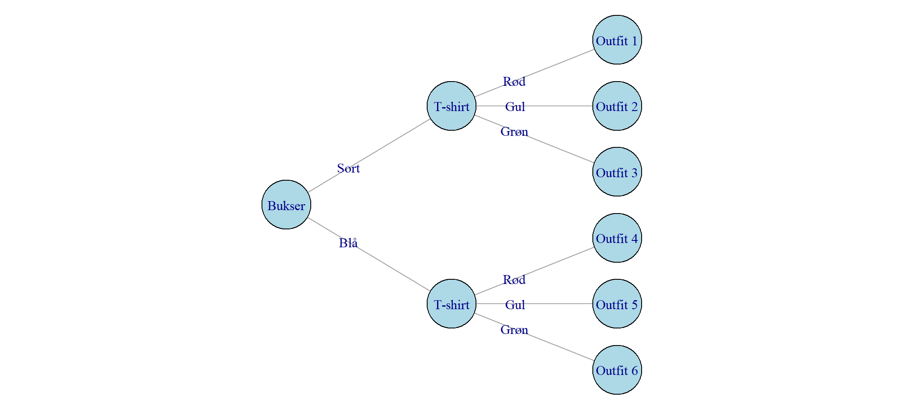
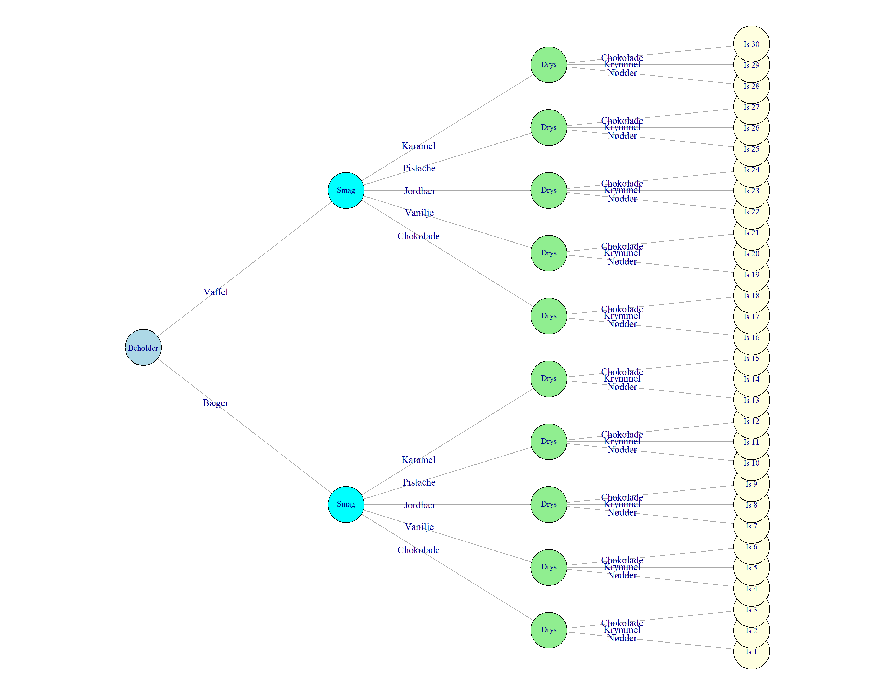

Kombinatorik
Hvad er kombinatorik?
Kombinatorik handler om, hvordan man tæller, hvor mange muligheder man har, når man vælger og sammensætter ting.
Her er nogle eksempler:
På hvor mange måder kan man vælge én elevrepræsentant fra en klasse med 25 elever? (Svaret er \(25\), og det er okay, hvis du synes, det var lovlig nemt.)
Hvis jeg på en restaurant kan vælge mellem tre forskellige forretter, tre forskellige hovedretter og tre forskellige desserter, på hvor mange måder kan jeg så sammensætte en menu? (Svaret er \(3 \cdot 3 \cdot 3 = 27\))
På hvor mange måder kan man vælge et festudvalg på tre personer fra en klasse med 25 elever? (Svaret er 2.300, og det er lidt svært at regne ud, men hæng på, vi kigger på det om lidt.)
Hvor mange forskellige pokerhænder findes der, hvis vi ved, at en hånd består af 5 kort trukket fra et spil med 52 kort? (Svaret er 2.598.960 og det er ret svært at regne ud – men når du er færdig med kapitlet her, er det faktisk ikke så svært.)
Begreberne
Som med meget matematik er en stor del af tricket i kombinatorik at være skarp på, præcist hvad der menes i et eller andet problem. Når vi vælger ting, bruger vi for eksempel begreberne med og uden tilbagelægning. Og vi taler om valg, som er ordnet eller uordnet. Hvad betyder det så?
Med tilbagelægning: Det kalder vi det, når vi kan vælge den samme ting flere gange. I nogle tilfælde er det helt klart, om det er med eller uden tilbagelægning. Når vi blander fredagsslik, kan vi godt tage to stykker af vores yndlingsvingummi. Hvis vi er på restaurant er det lidt mere usikkert hvad reglerne er: Vi kan nok godt få lov til at vælge en dessert både som forret, hovedret og dessert, men det er ikke så almindeligt, og normalt tager vi én forret, én hovedret og én dessert.
Uden tilbagelægning: Det er når vi ikke kan vælge den samme ting flere gange. Vi kan for eksempel kun vælge den samme person fra en klasse til festudvalget én gang. Det samme gælder for et fodboldhold, der kan kun være én Lionel Messi på holdet. Hvis du laver en hitliste over dine fem yndlingsmusikere, mener vi normalt også fem forskellige, du kan ikke have Taylor Swift på både 1., 2., 3., 4., og 5. pladsen.
Ordnet: Handler om, hvorvidt rækkefølgen betyder noget. På hitlisten gør det (normalt) en forskel hvem der ligger nummer 1, og hvem der ligger nummer 5. Hvis man sætter hold til en landskamp betyder det noget om man er på holdet eller ej, men ikke noget om træneren har valgt én som den første eller sidste. (Det er lidt anderledes, hvis man med holdopstilling også mener, hvem der spiller hvilken position. Det er derfor det er vigtigt at være skarp på, hvad man præcist mener, både når man stiller en matematikopgave og når man løser den.)
Uordnet: Det kalder vi det, når rækkefølgen ikke betyder noget. Hvis du blander slik, betyder det for eksempel ikke noget, hvilken rækkefølge du vælger slikket i – det bliver jo alligvel rystet sammen hulter til bulter i posen.
Vi kan lave en oversigt over begreberne, med eksempler, i et skema som det her:
| Ordnet | Uordnet | |
|---|---|---|
| Med tilbagelægning | Kombinationslås | Bland-selv-slik |
| Uden tilbagelægning | Hitliste | Lotto-tal |
Af skemaet kan vi se, at der på denne måde er i alt fire typer af problemer.
Kombinationslåsen er hvis man for eksempel vil vide, hvor mange mulige koder der på en lås med fire cifre fra 0-9. Rækkefølgen betyder noget, fordi koden 1234 ikke er det samme som 4321. Derfor er valget af kode ordnet. Og det er med tilbagelægning fordi det godt kan lade sig gøre at vælge det samme ciffer flere gange; man kan altså godt have koden 1219.
Bland-selv-slik, hitlisten og lotto-tallene er eksempler på de tre andre forskellige typer af problemer fra kombinatorikken.
Formlerne
Lad os se på, hvordan vi finder løsningen, når vi først har fundet ud af hvilket type problem vi har med at gøre.
Ordnet, med tilbagelægning
Lad os starte med kombinatoriske problemer der handler om ordnet udvælgelse, med tilbagelægning. Som jeg nævnte før, kunne det for eksempel være en kombinationslås. Nogle låse har fire ringe, hver med cifrene 0-9. Hvis en cykeltyv skulle prøve at åbne en lås ved at prøve sig frem, hvor lang tid ville det så tage?
Hvis der kun var én ring, ville der selvfølgelig være 10 muligheder: 0, 1, 2, 3, 4, 5, 6, 7, 8 og 9. Hvis der var to ringe, ville koden til første ring stadig kunne vælges på 10 måder, og for hver af de 10 måder ville anden ring stadig kunne vælges på 10 måder. Derfor ville det samlede antal kombinationer være \(10 \cdot 10 = 10^2 = 100\).
Hvis vi skrev alle mulighederne op, ville det se sådan her ud:
00, 01, 02, 03, 04, 05, 06, 07, 08, 09, 10, 11, 12, 13, 14, 15, 16, 17, 18, 19, 20, 21, 22, 23, 24, 25, 26, 27, 28, 29, 30, 31, 32, 33, 34, 35, 36, 37, 38, 39, 40, 41, 42, 43, 44, 45, 46, 47, 48, 49, 50, 51, 52, 53, 54, 55, 56, 57, 58, 59, 60, 61, 62, 63, 64, 65, 66, 67, 68, 69, 70, 71, 72, 73, 74, 75, 76, 77, 78, 79, 80, 81, 82, 83, 84, 85, 86, 87, 88, 89, 90, 91, 92, 93, 94, 95, 96, 97, 98, 99
Hvis der var tre ringe, ville tredje ring også have 10 muligheder, for hver af de 100 muligheder på de to første ringe. Derfor skulle vi gange med 10 en gang til, for at finde det samlede antal kombinationer: \(10 \cdot 10 \cdot 10 = 10^3 = 1000\).
Du kan måske godt se, hvad der sker, når vi har fire ringe? Jep, vi ganger med 10 en gang til: \(10 \cdot 10 \cdot 10 \cdot 10 = 10^4 = 10.000\)
Så en cykellås med 10 cifre på hver af fire ringe, har 10.000 mulige kombinationer. Hvis det tager i gennemsnit 2 sekunder for en cykeltyv at prøve en kombination, tager det i alt 20.000 sekunder at prøve alle kombinationer. Det er det samme som \(\frac{2000}{60\ sekunder} \approx 333\ minutter\) eller \(\frac{\frac{2000}{60\ sekunder}}{60} \approx 6\ timer\)
Tyven kan selvfølgelig være heldig at finde den rigtige kombination hurtigere, men det tager altså stadigvæk næsten 3 timer at nå bare halvdelen af alle mulige kombinationer.
Det er derfor, de fleste cykeltyve løfter cyklen op i en bil og klipper låsen op med en boltsaks. Det er også derfor, der ikke findes cykellåse med kun én ring og 10 kombinationer.
Matematik handler om at løse ting generelt. Det betyder, at vi ikke nødvendigvis er interesserede i cykellåse med netop 4 ringe og netop 10 cifre på hver ring. Lad os sige, at vi står med en lås der har \(n\) ringe og \(k\) cifre på hver ring. Det samlede antal kombinationer er så bare: \(n^k\)
For vores cykellås fra før, var \(n=10\) og \(k=4\) og vi fandt derfor \(10^4=10.000\) mulige kombinationer.
Hvis vi havde haft en lås med tre ringe og bogstaver i stedet for tal, ville der have været \(29^3 = 24.389\) forskellige kombinationer, fordi der findes 29 bogstaver (når vi tæller æ, ø og å med).
Hvis man både kunne bruge store og små bogstaver ville der være \(2 \cdot 29 = 58\) bogstaver at vælge imellem og antallet af kombinationer ville være meget større: \(58^3 = 195.112\).
Ordnet, uden tilbagelægning
Hvad nu hvis man ikke måtte bruge hvert tal mere end én gang på kombinationslåsen? Den situation opstår, hvis man for eksempel sammensætter et fodboldhold, eller et elevråd, eller en hitliste med yndlingsmusikere. For en fodboldspiller kan kun blive udtaget én gang, en elev bliver kun valgt én gang til elevrådet, og Taylor Swift kan ikke både være på 1. og 2. pladsen over yndlingssangere.
Lad os sige at 10 sportsfolk konkurrer hvem der kan springe længst. Der skal uddeles en guld-, sølv- og bronchemedalje. Hvor mange måder kan konkurrencen ende på?
Guldmedaljen kan vindes af \(10\) forskellige personer. Herefter er der \(9\) personer tilbage til at vinde sølvmedaljen. Og til sidst er der \(8\) tilbage som kan vinde broncemedaljen. Hvis vi bruger samme multiplikationsprincip som før, kan vi se, at der i alt er \(10 \times 9 \times 8 = 720\) måder de tre medaljer kan fordeles blandt 10 deltagere på.
Ligesom før vil vi gerne skrive det lidt mere generelt: Hvor mange måder kan præmierne (eller alt muligt andet) fordeles på, hvis vi har \(n\) deltagere og \(r\) præmier?
Her får vi brug for en regneart som hedder fakultet, og skrives med et udråbstegn. Det er ret enkelt: Fakultet til 3 skrives \(3!\) og er bare: \(3! = 3 \times 2 \times 1 = 6\). Fakultet til 5 er selvfølgelig: \(5! = 5 \times 4 \times 3 \times 2 \times 1 = 120\). Hele formålet med fakultet er at slippe for at skrive meget lange gangestykker. Tænk på, hvor besværligt det ville være at skrive \(100! = 100 \times 99 \times 98\) og så videre.
Én lille ting man bare skal vide om fakultet er, at man definerer fakultet til nul som én, altså: \(0!=1\) Lidt på samme måde som \(x^0=1\) hvilket vi talte om i kapitlet Hvad er logaritmefunktioner?
Når vi har det lille trick på plads, kan vi skrive vores udregning fra før sådan her:
\[\frac{10 \times 9 \times 8 \times 7 \times 6\times 5 \times 4 \times 3 \times 2 \times 1}{7 \times 6\times 5 \times 4 \times 3 \times 2 \times 1} = \frac{10 \times 9 \times 8 \times \cancel{7!}}{\cancel{7!}} = 10 \times 9 \times 8\]
Derfor bliver den generelle formel, med \(n\) spillere og \(k\) præmier:
\[\frac{n!}{(n-k)!}\]
Nogle gange bruger vi en endnu mere kompakt skrivemåde:
\[P(n,r) = \frac{n!}{(n-k)!}\]
Hvor \(P\) står for permutationer, hvilket bare betyder, at elementerne (her elever) er valgt på en måde, hvor rækkefølgen betyder noget – altså ordnet og uden tilbagelægning.
Det skal måske lige have et øjebliks eftertanke, selvom det egentlig ikke er så svært.
Har vi for eksempel 25 elever og skal vælge én elevrådsrepræsentant og én suppleant, har vi \(n=25\) og \(k=2\). Så det kan gøres på \(\frac{25!}{(25-2)!} = 25 \times 24 = 600\) måder.
Uordnet, uden tilbagelægning
Så er vi nået til de uordnede kombinatoriske problemer, altså dem hvor rækkefølgen ikke betyder noget. Hvis vi for eksempel skal nedsætte et festudvalg, betyder rækkefølgen af medlemmer ikke noget. Der er lige meget om vi først vælger Anna, så Benjamin og til sidst Clara, eller om vi først vælger Clara, så Anna og så Benjamin – det er det samme festudvalg. (Elevrådet som vi lige nævnte var anderledes, for der var forskel på at blive valgt til repræsentant eller suppleant.)
Vi kan starte med at udregne: \(25 \times 24 \times 23 = 13.800\). Det er formlen fra før: \(P(25,3) = \frac{25!}{(25-3)!} = 13.800\). Men fordi vi tæller ordnede kombinationer har vi talt for mange med: Anna, så Benjamin og Clara er talt som én kombination; Clara, Anna og Benjamin som en anden.
På hvor mange måder kan tre personer arrangeres? Det er faktisk lige præcis det, vi lærte i sidste afsnit, for det svarer til at vælge tre personer ud af tre mulige personer. Det kan gøres på \(P(3, 3) = \frac{3!}{(3-3)!} = 3! = 3 \times 2 \times 1 = 6\) måder. (Idet vi husker at \(0!=1\)).
Sagt lidt anderledes: Lad os forkorte navnene og sige, at festudvalget består af Anna (A), Benjamin (B) og Clara (C). Så er der disse 6 måder at udvælge dem i rækkefølge:
- A, B, C
- A, C, B
- B, A, C
- B, C, A
- C, A, B
- C, B, A
Men det er jo det samme festudvalg alle seks gange!
Derfor skal vi dividere de ordnede kombinationer 13.800 med 6 måder de kan ordnes på, for at finde det rigtige antal forskellige festudvalg:
\[\frac{25 \times 24 \times 23}{3!} = \frac{13.800}{6} = 2.300\]
Og hvis vi skriver det med fakulteter, får vi:
\[\frac{25!}{22! \times 3!} = \frac{25!}{3!(25-3)!} = 2.300\]
Dette er præcis formlen for uordnet udvælgelse uden tilbagelægning:
\[\binom{n}{k} = \frac{n!}{k!(n-k)!}\]
Hvor \(n=25\) (antal elever) og \(k=3\) (antal personer i festudvalget). Vi bruger den lidt sjove og måske nye skrivemåde \(\binom{n}{k}\) for antal “uordnede kombinationer”. Det er nemt at forveksle med en brøk: \(\frac{n}{k}\), men det er altså noget helt andet.
Et sidste eksempel: På hvor mange måder kan man sammensætte en pokerhånd bestående af 5 kort udvalgt fra et spil med 52 forskellige kort? Det er netop et problem der handler om uordnet udvælgelse uden tilbagelægning: Det lige meget hvilken rækkefølge du får kortene i, men du kan kun få hvert kort én gang.
Bruger vi formlen (og lommeregneren) er det egentlig slet ikke så svært:
\[\binom{52}{5} = \frac{52!}{5!(52-5)!} = 2.598.960\]
Der er altså mere end 2½ millioner pokerhænder.
Uordnet, med tilbagelægning
Den sidste type problem i kombinatorikken handler om uordnet udvælgelse med tilbagelægning. Det kunne være, når man vælger bland-selv-slik: Du kan godt tage samme slags slik flere gange, og rækkefølgen betyder ikke noget. Fordi det hele ikke skal handle om søde sager, så lad os tage et eksempel med isvafler i stedet for bland-selv-slik.
Lad os sige, at isbutikken har tre forskellige slags is: chokolade, vanilje og jordbær. Du skal vælge to kugler is, og du må godt tage samme kugle flere gange. På hvor mange forskellige måder kan du sammensætte din vaffelis?
Det er lidt mere vanskeligt at vride hjernen omkring. Vi kan løse det ved at tænke på det som bokse med is, som vi kan pege på. (Det er et kendt trick som nogle gange bliver kaldt “stjerner og pinde”, og blev udbredt af en matematiker ved navn William Feller – på billedet til højre.)
Vi har tre bokse med is, og vi kan illustrere dem sådan:

chokolade | vanilje | jordbær Lad os så sige at vi skriver vores valg sådan her, hvor o er en kugle og | er skillevæggen mellem boksene. Vi kan vælge de to kugler blandt de tre slags på seks måder:
o o | | = 2 chokolade, 0 vanilje, 0 jordbær
o | o | = 1 chokolade, 1 vanilje, 0 jordbær
o | | o = 1 chokolade, 0 vanilje, 1 jordbær
| o o | = 0 chokolade, 2 vanilje, 0 jordbær
| o | o = 0 chokolade, 1 vanilje, 1 jordbær
| | o o = 0 chokolade, 0 vanilje, 2 jordbærSå for eksempel | o o | er en slags kode, der betyder, vi har valgt to kugler med vanilje. Hvor mange forskelige “koder” er der? Der er fire positioner eller tegn i koden, én for hver af de to kugler, og én for hver af de to skillevægge. På hvor mange måder kan vi placere vores iskugler på de fire positioner? Det er lige præcis et uordnet problem uden tilbagelægning, så vi har lige lært, at vi kan regne det ud sådan her:
\[\binom{4}{2} = \frac{4!}{2!(4-2)!} = \frac{24}{2 \times 2} = 6\]
Hvor vi regner os frem til seks muligheder, svarende til den liste vi lige så.
Hvis vi havde haft fire slags is ville vi have haft brug for en skillevæg mere. For eksempel:
chokolade | vanilje | jordbær | pistache Så skulle vi vælge vores to iskugler i en kode med fem positioner, for eksempel sådan her:
o | o | |for chokolade, vanilje, ingen jordbær og ingen pistache.
Det kan gøres på:
\[\binom{5}{2} = \frac{5!}{2!(5-2)!} = \frac{120}{2 \times 6} = 10\] måder.
Og så til den generelle variant: Hvis vi har \(n\) forskellige smagsvarianter og skal vælge \(k\) kugler, får vi:
- \(k\) er antal kugler vi vælger (vi har brugt
osom symbol for kugle). - \(n-1\) er antal skillevægge mellem de \(n\) smagsvarianter (vi har brugt
|som symbol for skillevæg). - I alt \(k + (n-1) = n+k-1\) tegn i “koden” for isvalg.
Vi skal vælge hvilke \(k\) af de \(n+k-1\) positioner i koden, der skal være kugler, hvilket giver:
\[\binom{n+k-1}{k} = \frac{(n+k-1)!}{k!(n-1)!}\]
Dette er dermed formlen for uordnet udvælgelse med tilbagelægning.
Hvis du syntes det var lidt svært, så vil jeg godt indrømme, at det synes jeg også. Det er noget af et mentalt spring at tænke i “koder” og “skillevægge”, når man bare gerne vil have en is.
Men hvis du sådan nogenlunde kunne følge tankegangen, håber jeg du kan acceptere, at formlen er rigtigt nok. Den findes i rigtig mange formelsamlinger, eller på nettet, hvis du har lyst til at tjekke efter.
Overblik
Vi kan sætte de formler vi har gennemgået ind i skemaet fra starten, for at få et overblik:
| Ordnet | Uordnet | |
|---|---|---|
| Med tilbagelægning | \(n^k\) | \(\binom{n+k-1}{k} = \frac{(n+k-1)!}{k!(n-1)!}\) |
| Uden tilbagelægning | \(\frac{n!}{(n-k)!}\) | \(\binom{n}{k} = \frac{n!}{k!(n-k)!}\) |
De fire formler får os et langt stykke af vejen i mange problemer der handler om kombinatorik. Men som jeg skrev allerede i starten, det vigtigste (og sværeste) er næsten at gøre sig helt klart, hvad for en type problem man har med at gøre. Ordnet eller uordnet, med eller uden tilbagelægning (eller måske en spøjs variation)?
Modsatte vej
Lad os kigge på kodelåsen igen, og se hvordan man kan bruge logaritmer til at regne den modsatte vej: Hvor mange muligheder kræver det, hvis vi ønsker et bestemt antal kombinationer?
Forestil dig, at vi designede en kodelås beregnet til folk, som ikke kan læse tal og bogstaver, og vi i stedet brugte farver. Vi ville nok ikke have lyst til alt for mange farver, for så ville de minde for meget om hinanden. Lad os sige, vi ville lave en lås, hvor hver ring havde fire farvemuligheder: Rød, grøn, gul og blå.
Hvor mange ringe skulle vi have, for at få mindst 10.000 kombinationer, så det ville være meget svært at prøve sig frem og finde den rigtige? Lad os prøve med en ligning, og bruge formlen \(n^k\), fordi vi har et ordnet problem med tilbagelægning:
\(4^k > 10000\)
Hvor \(k\) er antallet af ringe og 4 er de 4 farver vi besluttede os for. Den type ligning lærte vi at løse i kapitlet Hvad er logaritmefunktioner?. Kort fortalt er tricket bare at tage logaritmen på begge sider:
\(log(4^k) > log(10000)\)
Herfra kan vi bruge regnereglen, \(log(x^n) = n \cdot log(x)\) og få:
\(k \cdot log(4) > log(10000)\)
Flytter vi lidt rundt og bruger lommeregneren finder vi:
\(k > \frac{log(10000)}{log(4)} > 6{,}6\)
En lås med fire farver skal altså have syv ringe for at nå op på mere end 10.000 kombinationer. (Vi kan hurtigt tjekke hvor mange kombinationer det giver, sådan her: \(4^7 = 16.384\). Vi kan også tjekke, at 6 ringe ikke havde været nok: \(4^6 = 4096\))
Tælletræet
Tælletræet er også et almindeligt værktøj til at kunne se, hvordan antallet af kombinationer vokser, jo flere valg vi har, og jo flere muligheder der er ved hvert valg. Fordelen er, at det også kan bruges, hvis de enkelte valg har forskellige muligheder.
Altså for eksempel hvis man skal tage tøj på og først skal vælge mellem to forskellige farver bukser og dernæste mellem tre andre farver t-shirt. I det eksempel kan et tælletræ se sådan her ud:
Hver cirkel er et valg, og hver streg er en mulighed for at vælge. I eksemplet har vi to farver bukser, sort og blå, og tre farver t-shirts: Rød, gul og grøn. Det giver så i alt seks muligheder for ret farverige outfits. Det er samme multiplikationsprincip som vi har brugt før: Bukserne kan vælges på to måder, og for hver mulighed kan t-shirten vælges på tre måder, så det samlede antal kombinationer er \(2 \times 3 = 6\).
Der er ikke nogen generel formel der helt dækker denne situation, for der er så mange måder valgene kan skrues sammen på, så man er nødt til at se på de enkelte tilfælde – om det så er tøj, isvafler eller noget helt andet.
Hvis vi skal tilbage til isene, kan man forestille sig, at man først skal vælge mellem bæger og vaffel (to muligheder), én kugle blandt 5 forskellige smage, og så én af tre forskellige slags drys på toppen. I så fald ville tælletræet se sådan her ud:

I dette eksempel kan vi se, at der er i alt \(2 \times 5 \times 3 = 30\) forskellige måder at sammensætte en is på. Vi kan også se, at tælletræer hurtigt kan blive lidt gnidrede.
Kast med to terninger
Et meget almindeligt spørgsmål i kombinatorik er, hvor mange mulige udfald der er, hvis man kaster to terninger? Som altid er det vigtigt at være præcis: Er der forskel på de to terninger, eller er det lige meget om man slår seks med den ene terning og et med den anden eller omvendt? Hvis man spiller ludo eller backgammon er rækkefølgen lige meget, 6-1 er det samme som 1-6. I så fald er udvælgelsen uordnet (men i andre spil kunne det være anderledes.)
Der er også tale om tilbagelægning – man kan godt slå en femmer med begge terninger.
Derfor er vi i præcis samme situation som med isen og de tre smage, men denne gang skal vi vælge to tal ud af seks mulige. Rækkefølgen er stadig ligegyldig og man kan godt tage samme tal to gange. Vi bruger altså igen formlen for uordnet udvælgelse med tilbagelægning:
\[\binom{n+k-1}{k} = \frac{(n+k-1)!}{k!(n-1)!}\]
Med to sekssidede terninger er \(n=6\) og \(k=2\):
\[\binom{6+2-1}{2} = \frac{(6+2-1)!}{2!(6-1)!} = \frac{7!}{2 \times 5!} = \frac{5040}{240} = 21\]
Altså 21 forskellige slag med to terninger.
Når vi lige netop har to terninger, kan det være nyttigt for overblikket at sætte det op i en tabel, hvor den ene terning er rækkerne og den anden terning er kolonnerne. Her er sådan en tabel:
| Første terning |
Anden terning 1 |
2 |
3 |
4 |
5 |
6 |
|---|---|---|---|---|---|---|
| 1 | 1-1 | 1-2 | 1-3 | 1-4 | 1-5 | 1-6 |
| 2 | 2-1 | 2-2 | 2-3 | 2-4 | 2-5 | 2-6 |
| 3 | 3-1 | 3-2 | 3-3 | 3-4 | 3-5 | 3-6 |
| 4 | 4-1 | 4-2 | 4-3 | 4-4 | 4-5 | 4-6 |
| 5 | 5-1 | 5-2 | 5-3 | 5-4 | 5-5 | 5-6 |
| 6 | 6-1 | 6-2 | 6-3 | 6-4 | 6-5 | 6-6 |
Som tabellen viser, er der i alt 36 kombinationer, eller celler i tabellen, når vi kaster to terninger. Men eftersom nogle af mulighederne er ens (1-6 er det samme som 6-1), giver det kun 21 forskellige kombinationer. Tæl selv efter.
De fremhævede kombinationer på diagonalen (1-1, 2-2, 3-3, 4-4, 5-5, 6-6) er de såkaldte “dobbelte” - hvor begge terninger viser det samme tal. Bemærk at der kun er én måde at få hver dobbelt på, mens der er to måder at få alle andre slag på.
Det antyder også en sammenhæng mellem kombinatiorik og sandsynligsregning (et stort emne, som vi slet ikke har kigget på endnu.) Sandsynligheden for at slå for eksempel 3-5 er \(\frac{2}{36} = \frac{1}{18} \approx 0{,}06\) fordi der er to måder ud af alle 36 kombinationer at slå 3-5 på, nemlig 3-5 og 5-3. Men sandsynligheden for at slå 6-6 er \(\frac{1}{36} \approx 0{,}03\) fordi der kun er én måde at gøre det på.
Opgaver
Opgave 1: Hvis en restaurant har 5 forretter, 8 hovedretter og 4 desserter, på hvor mange måder kan du sammensætte en komplet menu?
Vis svar
Dette er et simpelt multiplikationsproblem:
- Du skal vælge 1 forret ud af 5 muligheder
- Du skal vælge 1 hovedret ud af 8 muligheder
- Du skal vælge 1 dessert ud af 4 muligheder
Derfor er det samlede antal menuer: \(5 \times 8 \times 4 = \textbf{160}\) forskellige måder.
Opgave 2: På hvor mange måder kan man blande 10 stykker slik ud af de 100 forskellige stykker kiosken har?
Vis svar
Dette er et problem med uordnet udvælgelse med tilbagelægning, da:
- Rækkefølgen af slik i posen er ligegyldig (uordnet)
- Man kan vælge flere af samme slags slik (med tilbagelægning)
Vi bruger formlen: \(\binom{n+k-1}{k} = \binom{100+10-1}{10} = \binom{109}{10}\)
Dette giver 42.634.215.112.710 forskellige måder at blande slikket på.
Opgave 3: Hvor mange forskellige 4-cifret koder kan man lave, hvis alle cifre skal være forskellige?
Vis svar
Dette er et problem med ordnet udvælgelse uden tilbagelægning:
- Rækkefølgen betyder noget (ordnet)
- Vi kan ikke bruge samme ciffer to gange (uden tilbagelægning)
Vi vælger 4 cifre ud af 10 mulige (0-9), hvor rækkefølgen betyder noget.
Formlen er: \(\frac{n!}{(n-k)!} = \frac{10!}{(10-4)!} = \frac{10!}{6!} = 10 \times 9 \times 8 \times 7 = \textbf{5.040}\)
Der er altså 5.040 forskellige 4-cifret koder med forskellige cifre.
Opgave 4: Du har en garderobe med 4 par bukser, 6 forskellige T-shirts og 3 par sko. På hvor mange måder kan du sammensætte et outfit bestående af ét par bukser, én T-shirt og ét par sko?
Vis svar
Dette er et simpelt multiplikationsproblem:
- Du skal vælge 1 par bukser ud af 4 muligheder
- Du skal vælge 1 T-shirt ud af 6 muligheder
- Du skal vælge 1 par sko ud af 3 muligheder
Derfor er det samlede antal outfits: \(4 \times 6 \times 3 = \textbf{72}\) forskellige måder.
Opgave 5: Hvor mange forskellige 4-cifrede pinkoder kan man lave, hvis man må bruge samme ciffer flere gange?
Vis svar
Dette er et problem med ordnet udvælgelse med tilbagelægning:
- Rækkefølgen betyder noget (pinkoden 1234 er forskellig fra 4321)
- Vi kan bruge samme ciffer flere gange (med tilbagelægning)
For hver af de 4 positioner i pinkoden kan vi vælge mellem 10 cifre (0-9). Derfor er det samlede antal pinkoder:
\[10 \times 10 \times 10 \times 10 = 10^4 = \textbf{10.000}\]
Der er altså 10.000 forskellige 4-cifrede pinkoder.
Opgave 6: En bogklub skal vælge 4 bøger ud af 12 tilgængelige bøger til at læse i løbet af året. På hvor mange måder kan de vælge de 4 bøger?
Vis svar
Dette er et problem med uordnet udvælgelse uden tilbagelægning:
- Rækkefølgen betyder ikke noget (det samme udvalg af bøger, uanset rækkefølge)
- Hver bog kan kun vælges én gang (uden tilbagelægning)
Vi bruger formlen: \(\binom{n}{k} = \frac{n!}{k!(n-k)!}\)
Med \(n=12\) bøger og \(k=4\) valg får vi:
\[\binom{12}{4} = \frac{12!}{4!(12-4)!} = \frac{12!}{4! \times 8!} = \textbf{495}\]
Der er altså 495 forskellige måder at vælge 4 bøger ud af 12.
Opgave 7: Ved en konkurrence skal der uddeles guld-, sølv- og bronchemedaljer til 8 deltagere. På hvor mange måder kan de tre medaljer fordeles?
Vis svar
Dette er et problem med ordnet udvælgelse uden tilbagelægning:
- Rækkefølgen betyder noget (guld ≠ sølv ≠ bronze)
- Hver person kan kun få én medalje (uden tilbagelægning)
Vi vælger 3 personer ud af 8, hvor rækkefølgen betyder noget. Formlen er:
\[\frac{n!}{(n-k)!} = \frac{8!}{(8-3)!} = \frac{8!}{5!} = 8 \times 7 \times 6 = \textbf{336}\]
Der er altså 336 forskellige måder at fordele de tre medaljer.
Opgave 8: Du skal vælge en formand og en næstformand til en klub, der har 20 medlemmer. Lad os identificere hvilken type problem det er:
Er rækkefølgen vigtig i dette problem?
Kan samme person vælges til både formand og næstformand?
Hvilken type problem er det? (ordnet/uordnet og med/uden tilbagelægning)
Hvilken formel skal vi bruge?
Bonus: Beregn antallet af måder, hvis du har lyst!
Vis svar
Lad os besvare hvert spørgsmål:
a) Er rækkefølgen vigtig?
Ja! Formand og næstformand er to forskellige roller. Det er ikke det samme at vælge Anna til formand og Benjamin til næstformand, som at vælge Benjamin til formand og Anna til næstformand. Rækkefølgen betyder altså noget.
b) Kan samme person vælges til begge roller?
Nej. En person kan ikke være både formand og næstformand på samme tid. Vi vælger uden tilbagelægning.
c) Hvilken type problem er det?
Dette er et ordnet problem uden tilbagelægning.
d) Hvilken formel skal vi bruge?
Vi bruger formlen for permutationer (ordnet udvælgelse uden tilbagelægning):
\[P(n,k) = \frac{n!}{(n-k)!}\]
e) Beregning:
Med \(n=20\) medlemmer og \(k=2\) roller får vi:
\[P(20,2) = \frac{20!}{(20-2)!} = \frac{20!}{18!} = 20 \times 19 = \textbf{380}\]
Der er altså 380 forskellige måder at vælge formand og næstformand på.
Opgave 9: I det danske lotto skal man vælge 7 tal ud af tallene 1-36. På hvor mange måder kan man udfylde en lottokulpon?
Vis svar
Dette er et problem med uordnet udvælgelse uden tilbagelægning:
- Rækkefølgen betyder ikke noget (det samme lodtrækningsnummer, uanset rækkefølge)
- Hvert tal kan kun vælges én gang (uden tilbagelægning)
Vi bruger formlen: \(\binom{n}{k} = \frac{n!}{k!(n-k)!}\)
Med \(n=36\) tal og \(k=7\) valg får vi:
\[\binom{36}{7} = \frac{36!}{7!(36-7)!} = \frac{36!}{7! \times 29!} = \textbf{8.347.680}\]
Der er altså 8.347.680 forskellige måder at udfylde en lottokulpon på. Det er derfor ret svært at vinde i lotto!
Opgave 10: Du skal lave et 3-bogstavs password, hvor alle tre bogstaver skal være forskellige. Det danske alfabet har 29 bogstaver (A-Å). Hvor mange forskellige passwords kan du lave?
Vis svar
Dette er et problem med ordnet udvælgelse uden tilbagelægning:
- Rækkefølgen betyder noget (ABC er forskellig fra BAC)
- Hvert bogstav kan kun bruges én gang (uden tilbagelægning)
Vi vælger 3 bogstaver ud af 29, hvor rækkefølgen betyder noget:
\[\frac{n!}{(n-k)!} = \frac{29!}{(29-3)!} = \frac{29!}{26!} = 29 \times 28 \times 27 = \textbf{21.924}\]
Der er altså 21.924 forskellige 3-bogstavs passwords med forskellige bogstaver.
Opgave 11: I en isbutik kan du vælge 3 kugler is ud af 5 forskellige smagsvarianter. Du må gerne tage samme smag flere gange. På hvor mange måder kan du sammensætte din is?
Vis svar
Dette er et problem med uordnet udvælgelse med tilbagelægning:
- Rækkefølgen betyder ikke noget (det er samme is, uanset hvilken rækkefølge kuglerne vælges i)
- Du kan vælge samme smag flere gange (med tilbagelægning)
Vi bruger formlen for uordnet udvælgelse med tilbagelægning:
\[\binom{n+k-1}{k} = \binom{5+3-1}{3} = \binom{7}{3} = \frac{7!}{3!(7-3)!} = \frac{7!}{3! \times 4!} = \textbf{35}\]
Der er altså 35 forskellige måder at sammensætte din is på.
Opgave 12: En fodboldtræner har 15 spillere til rådighed og skal vælge 11 til startopstillingen. På hvor mange måder kan træneren vælge startopstillingen?
Vis svar
Dette er et problem med uordnet udvælgelse uden tilbagelægning:
- Rækkefølgen betyder ikke noget (vi tæller bare hvem der er med, ikke i hvilken rækkefølge de vælges)
- Hver spiller kan kun vælges én gang (uden tilbagelægning)
Vi bruger formlen: \(\binom{n}{k} = \frac{n!}{k!(n-k)!}\)
Med \(n=15\) spillere og \(k=11\) valg får vi:
\[\binom{15}{11} = \frac{15!}{11!(15-11)!} = \frac{15!}{11! \times 4!}\]
Dette er det samme som \(\binom{15}{4}\) (fordi det er det samme at vælge 11 til at være med som at vælge 4 til at sidde på bænken):
\[\binom{15}{4} = \frac{15 \times 14 \times 13 \times 12}{4 \times 3 \times 2 \times 1} = \textbf{1.365}\]
Der er altså 1.365 forskellige måder at sammensætte startopstillingen.
Opgave 13: Du kaster to terninger: en normal 6-sidet terning (med tallene 1-6) og en 8-sidet terning (med tallene 1-8). Hvis du tænker på resultatet som et uordnet par (hvor det ikke betyder noget hvilken terning der viser hvad), hvor mange forskellige udfald kan du så få?
Vis svar
Dette er et mere kompliceret problem, der kræver at vi tænker i cases!
Vi kan ikke bare bruge en standardformel her, fordi de to terninger har forskellige antal sider. Lad os tænke systematisk:
Case 1: Begge terninger viser samme tal (1-6)
Dette kan kun ske for tallene 1, 2, 3, 4, 5 og 6 (da den 6-sidede terning ikke kan vise 7 eller 8). Så der er 6 muligheder.
Case 2: De to terninger viser forskellige tal fra 1-6
Vi vælger 2 forskellige tal ud af tallene 1-6, hvor rækkefølgen ikke betyder noget:
\[\binom{6}{2} = \frac{6 \times 5}{2} = 15 \text{ muligheder}\]
Case 3: Den 6-sidede viser 1-6, den 8-sidede viser 7 eller 8
Den 6-sidede kan vise 6 forskellige tal, og den 8-sidede kan vise 2 forskellige tal (7 eller 8). Det giver \(6 \times 2 = 12\) muligheder.
Total antal uordnede par:
\[6 + 15 + 12 = \textbf{33}\]
Der er altså 33 forskellige uordnede udfald når man kaster en 6-sidet og en 8-sidet terning.
Opgave 14: Hvor mange cifre skal en pinkode have for at der er mindst 1 million forskellige kombinationer? (Husk at cifre må gentages)
Vis svar
Dette er et eksempel på at bruge kombinatorik “baglæns” sammen med logaritmer!
Vi ved at en pinkode med \(k\) cifre har \(10^k\) forskellige kombinationer (ordnet med tilbagelægning). Vi søger det mindste \(k\) hvor:
\[10^k \geq 1.000.000\]
Vi løser denne ulighed ved at tage logaritmen på begge sider:
\[\log(10^k) \geq \log(1.000.000)\]
Ved hjælp af logaritmereglen \(\log(a^b) = b \cdot \log(a)\) får vi:
\[k \cdot \log(10) \geq \log(1.000.000)\]
\[k \geq \frac{\log(1.000.000)}{\log(10)} = \frac{6}{1} = 6\]
Lad os tjekke: \(10^6 = 1.000.000\) ✓ og \(10^5 = 100.000\) (ikke nok)
Svar: Pinkoden skal have mindst 6 cifre for at have mindst 1 million kombinationer.
Opgave 15: I en klasse er der 12 piger og 13 drenge. Der skal vælges et udvalg bestående af 3 piger og 2 drenge. På hvor mange måder kan dette udvalg sammensættes?
Vis svar
Dette er et problem der består af to separate, uafhængige valg:
Trin 1: Vælg 3 piger ud af 12
Dette er uordnet udvælgelse uden tilbagelægning:
\[\binom{12}{3} = \frac{12!}{3!(12-3)!} = \frac{12 \times 11 \times 10}{3 \times 2 \times 1} = 220\]
Trin 2: Vælg 2 drenge ud af 13
Dette er også uordnet udvælgelse uden tilbagelægning:
\[\binom{13}{2} = \frac{13!}{2!(13-2)!} = \frac{13 \times 12}{2 \times 1} = 78\]
Total antal måder:
Fordi vi skal gøre både trin 1 og trin 2, bruger vi multiplikationsprincippet:
\[\binom{12}{3} \times \binom{13}{2} = 220 \times 78 = \textbf{17.160}\]
Der er altså 17.160 forskellige måder at sammensætte udvalget.
Opgave 16: Hvor mange 4-cifrede pinkoder indeholder mindst én 7?
Vis svar
Dette er et fantastisk eksempel på komplementær tælling - en metode hvor vi tænker “omvendt”!
Den svære vej:
Hvis vi skulle tælle direkte, skulle vi finde alle koder med nøjagtigt én 7, plus alle med nøjagtigt to 7’ere, plus alle med nøjagtigt tre 7’ere, plus koden med fire 7’ere. Det bliver meget kompliceret!
Den smarte vej - komplementær tælling:
I stedet tænker vi:
“Mindst én 7” = “Alle koder” minus “Koder uden nogen 7’er”
Trin 1: Alle 4-cifrede koder
\[10^4 = 10.000\]
Trin 2: Koder uden 7’ere
Hvis vi ikke må bruge 7, har vi kun 9 cifre at vælge imellem (0,1,2,3,4,5,6,8,9):
\[9^4 = 6.561\]
Trin 3: Subtraher
Koder med mindst én 7:
\[10^4 - 9^4 = 10.000 - 6.561 = \textbf{3.439}\]
Svar: Der er 3.439 pinkoder med mindst én 7.
Komplementær tælling er en meget nyttig teknik når “mindst én” eller “ikke alle” indgår i opgaven!
Opgave 17: Om morgenen skal du vælge morgenmad. Du kan vælge mellem 2 typer brød, 4 slags pålæg og 3 forskellige drikkevarer. Hvor mange forskellige morgenmadskombinationer kan du sammensætte?
Vis svar
Dette er et klassisk multiplikationsprincip-problem, som man kan illustrere med et tælletræ:
- Først vælger du brød: 2 muligheder
- Derefter vælger du pålæg: 4 muligheder (for hver brødtype)
- Til sidst vælger du drik: 3 muligheder (for hver kombination af brød og pålæg)
Det samlede antal kombinationer er:
\[2 \times 4 \times 3 = \textbf{24}\]
Der er altså 24 forskellige måder at sammensætte din morgenmad på.
Dette kunne man illustrere med et tælletræ, hvor hvert brødvalg fører til 4 pålægsvalg, og hvert af disse fører til 3 drikkevalg, hvilket giver \(2 \times 4 = 8\) grene på niveau 2, og \(8 \times 3 = 24\) endeknuder.
Opgave 18: Hvad er mest sikkert: en 4-cifret pinkode (hvor cifre må gentages) eller et 3-bogstavs password med små bogstaver fra det danske alfabet (hvor bogstaver må gentages)?
Vis svar
Lad os beregne antallet af muligheder for hver:
4-cifret pinkode:
Med 10 cifre (0-9) og 4 positioner, hvor cifre må gentages:
\[10^4 = \textbf{10.000}\] muligheder
3-bogstavs password:
Med 29 bogstaver (a-å) og 3 positioner, hvor bogstaver må gentages:
\[29^3 = \textbf{24.389}\] muligheder
Sammenligning:
\[24.389 > 10.000\]
Svar: 3-bogstavs passwordet er mere sikkert! Det har 14.389 flere kombinationer end pinkoden.
Dette viser hvor vigtig længden af alfabetet er for sikkerheden. Selv om passwordet er kortere (3 vs 4 tegn), giver det større alfabet (29 vs 10) flere kombinationer.
Opgave 19: Du har 8 forskellige matematikbøger der skal stå på en hylde. På hvor mange forskellige måder kan du arrangere dem?
Vis svar
Dette er et problem om permutationer - hvor mange måder kan vi ordne \(n\) forskellige objekter?
Når vi skal placere bøgerne: - Den første plads kan have hvilken som helst af de 8 bøger: 8 muligheder - Den anden plads kan have hvilken som helst af de resterende 7 bøger: 7 muligheder - Den tredje plads: 6 muligheder - … og så videre
Det samlede antal måder er:
\[8 \times 7 \times 6 \times 5 \times 4 \times 3 \times 2 \times 1 = 8! = \textbf{40.320}\]
Der er altså 40.320 forskellige måder at arrangere de 8 bøger på.
Dette er en general regel: \(n\) forskellige objekter kan arrangeres på \(n!\) måder.
Opgave 20: Du har 12 fotos og skal vælge 5 af dem til en udstilling. De 5 fotos skal hænges op på væggen i en bestemt rækkefølge (fra venstre mod højre). På hvor mange måder kan du gøre dette?
Vis svar
Dette problem kan løses på to måder:
Metode 1: To separate trin
Først skal vi vælge hvilke 5 fotos vi vil bruge (uordnet), og derefter beslutte rækkefølgen de skal hænge i:
Trin 1: Vælg 5 fotos ud af 12 (uordnet):
\[\binom{12}{5} = \frac{12!}{5! \times 7!} = 792\]
Trin 2: Arranger de 5 valgte fotos i rækkefølge:
\[5! = 5 \times 4 \times 3 \times 2 \times 1 = 120\]
Total:
\[\binom{12}{5} \times 5! = 792 \times 120 = \textbf{95.040}\]
Metode 2: Direkte permutation
Vi vælger 5 fotos ud af 12, hvor rækkefølgen betyder noget. Det er præcis definitionen på \(P(12,5)\):
\[P(12,5) = \frac{12!}{(12-5)!} = \frac{12!}{7!} = 12 \times 11 \times 10 \times 9 \times 8 = \textbf{95.040}\]
Begge metoder giver samme resultat: 95.040 forskellige måder.
Dette viser sammenhængen: \(\binom{n}{k} \times k! = \frac{n!}{(n-k)!} = P(n,k)\)
Opgave 21: I kortspillet poker består en hånd af 5 kort trukket fra et almindeligt kortspil med 52 kort. Et “fuldt hus” er en særlig hånd der består af 3 kort med samme værdi og 2 kort med en anden samme værdi (for eksempel 3 konger og 2 ottere). Hvor mange forskellige fuldt hus hænder findes der?
Vis svar
Dette er en af de sværeste opgaver i kombinatorik, fordi den kræver at vi tænker systematisk gennem flere trin!
Først: Hvad er et kortspil?
Et almindeligt kortspil har: - 52 kort i alt - 13 forskellige værdier: Es, 2, 3, 4, 5, 6, 7, 8, 9, 10, Knægt, Dame, Konge - 4 forskellige kulører: Hjerter, Ruder, Spar, Klør - Af hver værdi findes der præcis 4 kort (ét i hver kulør)
Hvad er fuldt hus?
Fuldt hus = 3 kort af én værdi + 2 kort af en anden værdi
Eksempel: 3 konger (uanset kulør) + 2 ottere (uanset kulør)
Hvordan tæller vi alle fuldt hus hænder?
Vi skal træffe 4 beslutninger:
Beslutning 1: Hvilken værdi skal vi have 3 af?
Vi kan vælge mellem alle 13 værdier (es til konge): 13 muligheder
Lad os sige vi vælger konge.
Beslutning 2: Hvilke 3 kort skal vi tage af de 4 konger?
Der findes 4 konger (en i hver kulør), og vi skal vælge 3 af dem:
\[\binom{4}{3} = 4 \text{ muligheder}\]
(Vi kunne vælge hjerter-ruder-spar, eller hjerter-ruder-klør, eller hjerter-spar-klør, eller ruder-spar-klør)
Beslutning 3: Hvilken værdi skal vi have 2 af?
Nu er konge brugt, så vi kan vælge mellem de resterende 12 værdier: 12 muligheder
Lad os sige vi vælger otter.
Beslutning 4: Hvilke 2 kort skal vi tage af de 4 ottere?
Der findes 4 ottere, og vi skal vælge 2 af dem:
\[\binom{4}{2} = \frac{4 \times 3}{2} = 6 \text{ muligheder}\]
Samlet antal fuldt hus hænder:
Vi bruger multiplikationsprincippet, fordi vi skal træffe alle 4 beslutninger:
\[13 \times 4 \times 12 \times 6 = \textbf{3.744}\]
Svar: Der findes 3.744 forskellige fuldt hus hænder.
Bonus-perspektiv:
Vi ved fra kapitlet at der i alt er \(\binom{52}{5} = 2.598.960\) pokerhænder. Sandsynligheden for at få fuldt hus er derfor:
\[\frac{3.744}{2.598.960} \approx 0.14\%\]
Det er altså ca. 1 ud af 694 pokerhænder der er fuldt hus - ret sjældent!